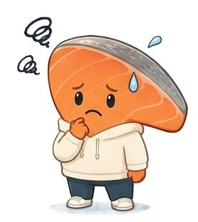
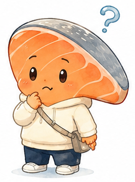

Chapter 01バラバラの知識を、絵に
前回、しゃけは "自分の老後資金" の数字に向き合った。
増やす・守る・使う・FIRE・老後——4章19話を通じて、しゃけのなかには、たくさんの知識がたまっていた。でも……整理が、追いついていない。
増やす・守る・使う・FIRE・老後——4章19話を通じて、しゃけのなかには、たくさんの知識がたまっていた。でも……整理が、追いついていない。

しゃけ
わかめ、相談なんだけど。
NISA、複利、FIRE、給料明細、iDeCo、保険、固定費、自己投資、経験、人とのつながり……ぜんぶ大事ってわかった。
でも頭の中、知識が散らかってる感じがするんだ……
NISA、複利、FIRE、給料明細、iDeCo、保険、固定費、自己投資、経験、人とのつながり……ぜんぶ大事ってわかった。
でも頭の中、知識が散らかってる感じがするんだ……
わかめ
ふふ、その感覚、最後の壁だよ。
知識を "自分の未来図"に当てはめないと、活きないんだ。
今日は、紙とペンで "未来年表" を書く時間。
知識を "自分の未来図"に当てはめないと、活きないんだ。
今日は、紙とペンで "未来年表" を書く時間。
ライフプランと聞くと "ガチガチの収支計画" を想像しがち。でも実際に大事なのは、"自分はどっちに進みたいか" を確認するための羅針盤です。
計画通りに行かなくていい。"考えた" という事実が、未来の選択を支えてくれます。
計画通りに行かなくていい。"考えた" という事実が、未来の選択を支えてくれます。
Chapter 02未来年表の3層
わかめ
未来年表は、3つの層で書くと、わかりやすいよ。
- ⏳時間軸5年後・10年後
20年後・30年後 - 🎯やりたいこと結婚・家・
転職・旅・学び - 💰必要なお金ざっくり額
"あ、これくらい"

しゃけ
これ、ガッツリ書くやつ？算数できなさそう……
わかめ
ぜんぜん大丈夫！
たとえばこんな感じ。
30歳：転職してみたいかも (準備金 50万)
32歳：海外旅行 (10万)
35歳：結婚？(挙式100万 / 新生活50万)
40歳：マイホーム？(頭金300万)
50歳：教育費(子供がいたら)
60歳：早期半リタイア検討
"いつかこうなるかも" を ざっくり書く だけでいい。
たとえばこんな感じ。
30歳：転職してみたいかも (準備金 50万)
32歳：海外旅行 (10万)
35歳：結婚？(挙式100万 / 新生活50万)
40歳：マイホーム？(頭金300万)
50歳：教育費(子供がいたら)
60歳：早期半リタイア検討
"いつかこうなるかも" を ざっくり書く だけでいい。
しゃけ
こうやって並べると、見えてくるものがあるね……
わかめ
うん、見えてきたことが、いちばんの収穫。
"あ、35歳までに 100万くらい必要そう" ってわかれば、
今から月いくら積立に回せばいいかが、シミュレーターで具体的に計算できる。
"あ、35歳までに 100万くらい必要そう" ってわかれば、
今から月いくら積立に回せばいいかが、シミュレーターで具体的に計算できる。
未来は1本道じゃありません。
① 順調プラン(理想)
② 標準プラン(現実的)
③ 守りプラン(最悪でもこれだけは)
この3パターンを描くと、"どれになっても大丈夫" という安心感が生まれます。これが、未来デザインの本質です。
① 順調プラン(理想)
② 標準プラン(現実的)
③ 守りプラン(最悪でもこれだけは)
この3パターンを描くと、"どれになっても大丈夫" という安心感が生まれます。これが、未来デザインの本質です。
Chapter 03シリーズが、ここで活きる
わかめ
未来年表を書いたら、シリーズの知識が、ここではじめて活きるんだ。
しゃけ
どう活きるの？
わかめ
たとえば——
"35歳までに100万円" → NISA + ドルコスト + インデックス で月いくら必要か計算 (EP04-07)
"50歳で早期リタイアしたい" → FIRE 25倍ルール で逆算 (EP18)
"教育費を考える" → iDeCo は 60歳まで使えないから NISA 中心 (EP11)
こうやって、19話の知識が、年表の各場面で役立つんだ。
"35歳までに100万円" → NISA + ドルコスト + インデックス で月いくら必要か計算 (EP04-07)
"50歳で早期リタイアしたい" → FIRE 25倍ルール で逆算 (EP18)
"教育費を考える" → iDeCo は 60歳まで使えないから NISA 中心 (EP11)
こうやって、19話の知識が、年表の各場面で役立つんだ。
しゃけ
うわぁ……！知識が、はじめて"自分のために" 動き出した感じ……！
わかめ
うん、それが Chapter 3 でしゃけにつかんでほしかったこと。
知識は、使われたときに、はじめて "未来をデザインする力" になるんだ。
知識は、使われたときに、はじめて "未来をデザインする力" になるんだ。
しゃけ
今日、家に帰ったら、ぼく未来年表書いてみるよ……！
デジタルでもいいけど、最初は 手書き が脳に効く。
- A4 用紙を1枚、ひらく
- 横軸に "5年後・10年後・20年後・30年後" を書く
- やってみたいこと/予測される出来事/必要な金額 を、ざっくり埋める
わかめ
未来年表、書いてみる気になった？じゃあ、いよいよ最終話。
しゃけ
え、もう最終話なんだ……ちょっと寂しい！
わかめ
20話で出会ったぜんぶが、ひとつの大きなメッセージに繋がる集大成回。
"お金は、未来を選ぶ道具"——心して読んでね。
"お金は、未来を選ぶ道具"——心して読んでね。
しゃけ
最終話、楽しみにしてるね！
今日のまとめ
- 未来年表 = "自分専用の羅針盤"。完璧でなくていい
- 3層構造: 時間軸 / やりたいこと / 必要なお金
- "3パターン" (順調・標準・守り) で描くと、不安が消える
- シリーズで学んだ知識は、"年表の場面ごとに" 活きる
- 今日描いた1枚が、明日からの判断基準になる
未来年表 × シミュレーター = 最強の組み合わせ
年表で "いつ・いくら必要か" が見えたら、シミュレーターで "月いくら積み立てれば届くか" を計算。
シリーズで学んだぜんぶが、この組み合わせで活きます。